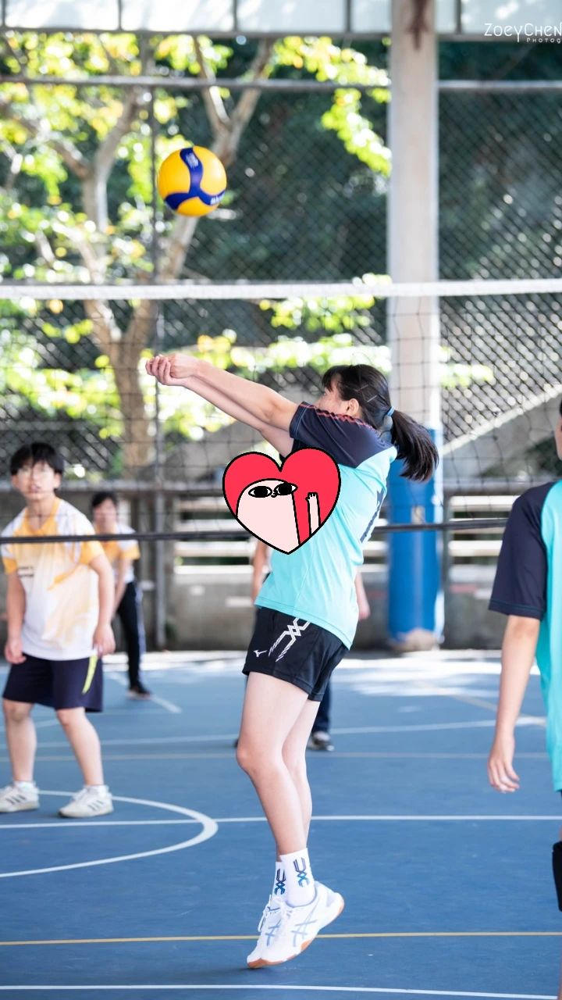
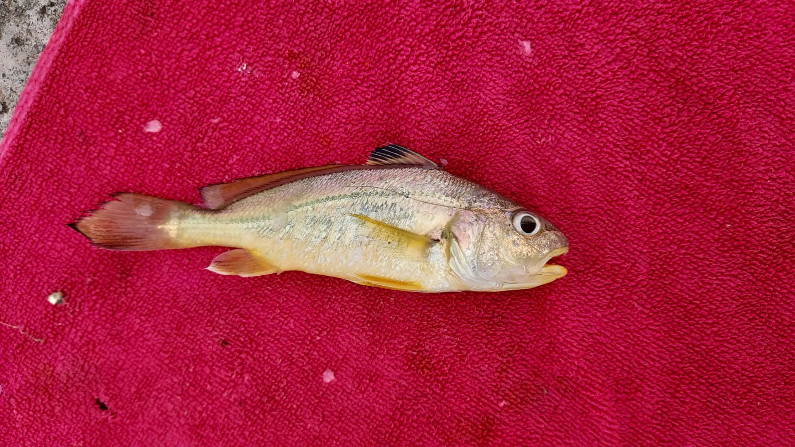
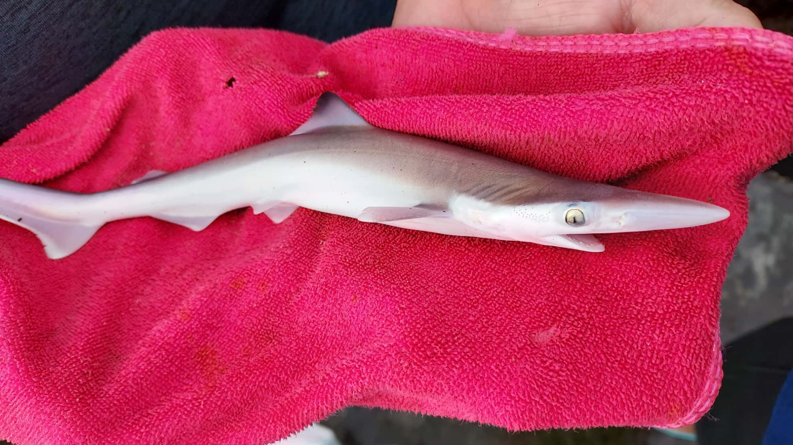
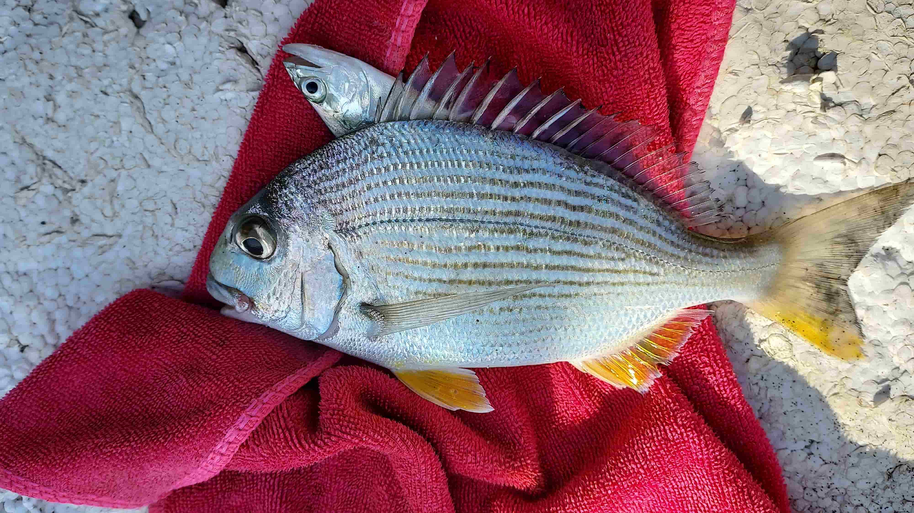

MY INTEREST
【我喜歡排球、攝影以及釣魚】


教會比賽
因著當時學校甚至是整個鹿港地區都不盛行排球，讓這個地區無法擁有資源練習排球。國中也是如此，比起排球，大家更喜好打籃球，且當時老師也只有教基本排球對碰，教完基礎後剩下的時間就放任大家去練習喜愛的運動，所以當時完全沒有機會練習排球。
但到了高中，因著來到台南，排球風氣非常興盛。而姊姊認識了很多教會的朋友，且他們在星期六早上6:30還有星期日下午4點都會進行排球運動，讓我能夠趁這個機會來學習。透過一位教會的姐姐教學讓我在短短一年間進步神速，也因著那位姐姐的教導，讓我能夠在高二、三、大一新生盃、系排時擁有著基本的基礎及教學能力來教同學抑或學長姐。讓我能夠在高二高三的運動會教導同學「如何使用正確姿勢碰球以及攻擊」。即使我教的同學們並不是同一個班級，但我還是讓兩個班因此得到了第三名，並幫助二班的男排獲得第二名。

攝影是我喜愛的興趣之一，教會總是會舉辦活動，不論是攝影的講座還是實作，讓我能夠因此接觸自己曾經的夢想。小時候我非常喜歡拍各式各樣的不論是物還是景，所以每當我看到有人拿起他的單眼相機時，我的內心就會激動不已，幻想自己拿著那台機器帥氣的樣子。所以當教會有人才來教導操作相機時，覺得自己離理想更進一步，讓我第一次獻給十萬元的高級單眼相機。
在高二時，原本存了一筆獎學金後打算要出國遊玩，殊不知碰到了疫情，而新冠肺炎在當時爆發的非常嚴重，後來拿著那筆錢來投資相機，也因此展開了我相機旅程。




在高三畢業後的暑假，父親開啟了釣魚之路，我就跟隨著他去釣魚。我們試著跑各個釣點探索魚群處。而釣魚是個極需耐心跟專注力，如果沒有魚上鉤就會感到非常灰心、沮喪，最後想放棄。透過釣魚可以磨練自己的耐心；至於為什麼會鍛鍊到專注力，是因為釣魚時若是沒有集中精神專注在釣竿上，會讓吃到餌的魚光速逃跑，喪失了一個機會。